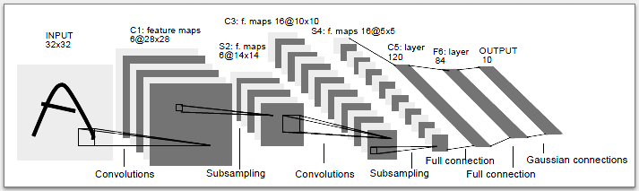

15. Red Convolucional en PyTorch#
15.1. Librería torchvision#
Es una librería utilitaria de PyTorch que facilita considerablemente el trabajo con imágenes. Algunas de las funciones y clases que provee:
Funcionalidad para descargar sets de benchmark: MNIST, CIFAR, IMAGENET, …
Modelos clásicos pre-entrenados: AlexNet, VGG, GoogLeNet, ResNet
Funciones para importar imágenes en distintos formatos
Funciones de transformación para hacer aumentación de datos en imágenes
Ejemplo: Base de datos de imágenes de dígitos manuscritos MNIST
Imágenes de 28x28 píxeles en escala de grises
Diez categorías: Dígitos manuscritos del cero al nueve
60.000 imágenes de entrenamiento, 10.000 imágenes de prueba
Por defecto las imágenes vienen en formato PIL (entero 8bit), usamos la transformación
ToTensor()para convertirla a tensor en float32
from torchvision.datasets import MNIST
import torchvision.transforms as transforms
mnist_train_data = MNIST(root='~/datasets/', train=True, download=True,
transform=transforms.ToTensor())
mnist_test_data = MNIST(root='~/datasets/', train=False, download=True,
transform=transforms.ToTensor())
image, label = mnist_train_data[0]
display(len(mnist_train_data), type(image), image.dtype, type(label))
60000
torch.Tensor
torch.float32
int
A continuación se muestran 10 imágenes aleatorias de MNIST junto a sus etiquetas:
%matplotlib inline
import numpy as np
import matplotlib.pyplot as plt
fig, ax = plt.subplots(1, 10, figsize=(10, 2), tight_layout=True)
idx = np.random.permutation(len(mnist_train_data))[:10]
for k in range(10):
image, label = mnist_train_data[idx[k]]
ax[k].imshow(image[0, :, :].numpy(), cmap=plt.cm.Greys)
ax[k].axis('off');
ax[k].set_title(label)
15.2. Capas de una red convolucional#
Las capas que le dan su nombre a esta arquitectura son las capas convolucionales. En estas capas:
Las neuronas de estas capas se organizan en filtros
Se realiza la correlación cruzada entre la imagen de entrada y los filtros
Existen capas convolucionales 1D, 2D y 3D
Los argumentos de la capa convolución de dos dimensiones son:
torch.nn.Conv2d(in_channels, #Cantidad de canales de la imagen de entrada
out_channels, #Cantidad de bancos de filtro
kernel_size, #Tamaño de los filtros (entero o tupla)
stride=1, #Paso de los filtros
padding=0, #Cantidad de filas y columnas para agregar a la entrada antes de filtrar
dilation=1, #Espacio entre los pixeles de los filtros
groups=1, #Configuración cruzada entre filtros de entrada y salida
bias=True, #Utilizar sesgo (b)
padding_mode='zeros' #Especifica como agregar nuevas filas/columnas (ver padding)
)
En el siguiente ejemplo se crea una capa convolucional con tres filtros de tamaño 3x3. Luego se muestra el resultado de aplicar los filtros a una imagen de ejemplo de MNIST.
import torch.nn as nn
conv_layer = nn.Conv2d(in_channels=1, out_channels=3, kernel_size=3)
example_image = mnist_train_data[0][0]
result = conv_layer(example_image)
example_image.shape, result.shape
fig, ax = plt.subplots(2, 4, figsize=(5, 3), tight_layout=True)
ax[1, 0].matshow(example_image[0], cmap=plt.cm.Greys)
ax[0, 0].axis('off')
ax[1, 0].axis('off')
for ax_, conv_filter in zip(ax[0, 1:], conv_layer.weight.detach().numpy()):
ax_.matshow(conv_filter[0], cmap=plt.cm.RdBu)
ax_.axis('off')
for ax_, filtered_image in zip(ax[1, 1:], result.detach().numpy()):
ax_.matshow(filtered_image, cmap=plt.cm.Greys)
ax_.axis('off')
Nota
Cada filtro resalta partes distintas de la imagen. Los pesos de los filtros se aprenden junto a la red neuronal.
Las capas de pooling son capas que reducen la dimensión (tamaño) de su entrada
Se usa tipicamente luego de una capa de convolución “activada” y realiza una operación no entrenable:
Por ejemplo:
Promedio de los píxeles en una región (kernel_size=2, stride=2)
1 2 1 0 2 3 1 2 2.00 1.00 0 1 0 1 0.75 0.25 2 0 0 0
Máximo de los pixeles en una región (kernel_size=2, stride=2)
1 2 1 0 2 3 1 2 3 2 0 1 0 1 2 1 2 0 0 0
Estas capas ayudan a reducir la complejidad del modelo y también otorgan “invarianza local a la traslación”, es decir que la posición donde estaba el patrón es menos relevante luego de aplicar pooling
Los argumentos de MaxPooling para entradas de dos dimensiones son:
torch.nn.MaxPool2d(kernel_size, # Mismo significado que en Conv2d
stride=None, # Mismo significado que en Conv2d
padding=0, #Mismo significado que en Conv2d
dilation=1, #Mismo significado que en Conv2d
return_indices=False, #Solo necesario para hacer unpooling
ceil_mode=False #Usar ceil en lugar de floor para calcular el tamaño de la salida
)
Las capas completamente conectadas también se utilizan en redes convolucionales. En general son las que se encargan de clasificar el resultado de los filtros convolucionales. A continuación veremos un esquema típico de arquitectura de red convolucional.
15.3. Arquitectura Lenet5#
La siguiente figura muestra la clásica arquitectura Lenet5.
{kind=link}
La arquitectura considera:
Dos capas convolucionales con 6 y 16 bancos de filtros, respectivamente
Las capas convolucionales usan filtros de 5x5 píxeles
Se usa max-pooling de tamaño 2x2 y stride 2
La primera capa convolucional espera un minibatch de imágenes de 1 canal (blanco y negro)
Usaremos la función de activación Rectified Linear Unit (ReLU)
Se usan tres capas completamente conectadas con 120, 84 y 10 neuronas, respectivamente
Podemos usar
reshapeoviewpara convertir un tensor de 4 dimensiones a dos dimensiones. Esto prepara un tensor que sale de una capa convolucional (o pooling) para ingresarlo a las capas completamente conectadas.
A continuación se muestra una implementación en pytorch:
import torch.nn as nn
class Lenet5(nn.Module):
def __init__(self):
super(type(self), self).__init__()
# La entrada son imágenes de 1x32x32
self.features = nn.Sequential(nn.Conv2d(1, 6, 5, padding=2),
nn.ReLU(),
nn.MaxPool2d(2),
nn.Conv2d(6, 16, 5),
nn.ReLU(),
nn.MaxPool2d(2))
self.classifier = nn.Sequential(nn.Linear(16*5*5, 120),
nn.ReLU(),
nn.Linear(120, 84),
nn.ReLU(),
nn.Linear(84, 10))
def forward(self, x):
z = self.features(x)
# Esto es de tamaño Mx16x5x5
z = z.view(-1, 16*5*5)
# Esto es de tamaño Mx400
return self.classifier(z)
model = Lenet5()
print(model)
Lenet5(
(features): Sequential(
(0): Conv2d(1, 6, kernel_size=(5, 5), stride=(1, 1), padding=(2, 2))
(1): ReLU()
(2): MaxPool2d(kernel_size=2, stride=2, padding=0, dilation=1, ceil_mode=False)
(3): Conv2d(6, 16, kernel_size=(5, 5), stride=(1, 1))
(4): ReLU()
(5): MaxPool2d(kernel_size=2, stride=2, padding=0, dilation=1, ceil_mode=False)
)
(classifier): Sequential(
(0): Linear(in_features=400, out_features=120, bias=True)
(1): ReLU()
(2): Linear(in_features=120, out_features=84, bias=True)
(3): ReLU()
(4): Linear(in_features=84, out_features=10, bias=True)
)
)
15.4. Clasificación de dígitos manuscritos con Lenet 5#
Entrenaremos el modelo Lenet5 para clasificar los dígitos de MNIST. En primer lugar creamos dataloaders de entrenamiento y validación como hemos visto anteriormente:
import torch
import torch.utils.data as tdata
mnist_train, mnist_valid = tdata.random_split(mnist_train_data, [50_000, 10_000],
generator=torch.Generator().manual_seed(1234))
train_loader = tdata.DataLoader(mnist_train, shuffle=True, batch_size=64)
valid_loader = tdata.DataLoader(mnist_valid, shuffle=False, batch_size=512)
Luego creamos una instacia del mdoelo, el optimizador y la función de costo. Se implementan funciones utilitarias para aplicarse sobre los minibatches de entrenamiento y validación.
Si tenemos acceso a una GPU podemos usar el atributo .cuda() o .to() para enviar el modelo y los datos a la GPU para acelerar los cálculos.
def train_one_step(batch):
optimizer.zero_grad()
data, labels = batch
data, labels = data.to(device), labels.to(device)
preds = model.forward(data)
loss = criterion(preds, labels)
loss.backward()
optimizer.step()
return loss.item()
def evaluate_one_step(batch):
with torch.no_grad():
data, labels = batch
data, labels = data.to(device), labels.to(device)
preds = model.forward(data)
loss = criterion(preds, labels)
return loss.item()
def train_one_epoch(epoch):
train_loss, valid_loss = 0.0, 0.0
for batch in train_loader:
train_loss += train_one_step(batch)
for batch in valid_loader:
valid_loss += evaluate_one_step(batch)
global best_valid_loss
if valid_loss < best_valid_loss:
best_valid_loss = valid_loss
torch.save({'epoca': epoch,
'model_state_dict': model.state_dict(),
'optimizer_state_dict': optimizer.state_dict(),
'loss': valid_loss},
'best_model.pt')
return train_loss/len(train_loader.dataset), valid_loss/len(valid_loader.dataset)
from tqdm.notebook import tqdm
model = Lenet5()
optimizer = torch.optim.Adam(model.parameters(), lr=1e-3)
criterion = nn.CrossEntropyLoss(reduction='sum')
device = torch.device('cpu')
#device = torch.device('cuda:0')
model = model.to(device)
max_epochs, best_valid_loss = 15, np.inf
running_loss = np.zeros(shape=(max_epochs, 2))
for epoch in tqdm(range(max_epochs)):
running_loss[epoch] = train_one_epoch(epoch)
fig, ax = plt.subplots(figsize=(7, 4), tight_layout=True)
ax.plot(running_loss[:, 0], label='Entrenamiento')
ax.plot(running_loss[:, 1], label='Validación')
ax.set_xlabel('Epoch')
ax.set_ylabel('Loss')
ax.legend();
15.5. Analizando las predicciones del modelo convolucional#
Primero recuperamos la red con menor costo de validación
model = Lenet5()
model.load_state_dict(torch.load('best_model.pt')['model_state_dict'])
<All keys matched successfully>
Haremos la evaluación final del a red en el conjunto de prueba/test
Iteramos sobre el conjunto y guardamos las predicciones de la red
test_loader = tdata.DataLoader(mnist_test_data, shuffle=False, batch_size=512)
test_targets = mnist_test_data.targets.numpy()
prediction_test = []
for mbdata, label in test_loader:
logits = model(mbdata).detach()
prediction_test.append(logits.argmax(dim=1).numpy())
prediction_test = np.concatenate(prediction_test)
Con esto podemos construir una matriz de confusión y un reporte usando las herramientas de sklearn
from sklearn.metrics import ConfusionMatrixDisplay, classification_report
ConfusionMatrixDisplay.from_predictions(test_targets, prediction_test);
print(classification_report(test_targets, prediction_test, digits=3))
precision recall f1-score support
0 0.978 0.998 0.988 980
1 0.995 0.995 0.995 1135
2 0.996 0.986 0.991 1032
3 0.993 0.992 0.993 1010
4 0.994 0.990 0.992 982
5 0.993 0.985 0.989 892
6 0.994 0.984 0.989 958
7 0.992 0.988 0.990 1028
8 0.986 0.989 0.987 974
9 0.977 0.989 0.983 1009
accuracy 0.990 10000
macro avg 0.990 0.990 0.990 10000
weighted avg 0.990 0.990 0.990 10000
Luego de evaluar la red el siguiente paso es estudiar sus errores. Para problemas con imágenes es muy recomendable visualizar los ejemplos mal predichos por la red
Esto podría revelar
Imágenes mal etiquetadas: Podemos cambiar su etiqueta y re-entrenar/re-evaluar
Errores sistemáticos del modelo: Por ejemplo que siempre se equivoque con una clase u objeto en particular
Observemos algunos ejemplos mal clasificados
Las imágenes corresponden a
digitque no fueron predichos comodigitEl título de la imagen tiene la predicción por la red
Veamos 10 ejemplos erroneos para tres clases particulares:
fig, ax = plt.subplots(3, 10, figsize=(8, 3), tight_layout=True)
for k, digit in enumerate([8, 4, 9]):
idx = np.where((test_targets == digit) & ~(prediction_test == digit))[0]
for i in range(10):
ax[k, i].axis('off')
if i < len(idx):
ax[k, i].set_title(prediction_test[idx[i]])
ax[k, i].imshow(mnist_test_data[idx[i]][0].numpy()[0, :, :], cmap=plt.cm.Greys_r)
Reflexión Según la forma de los dígitos ¿tienen sentido estos errores? Discuta con sus compañeros.